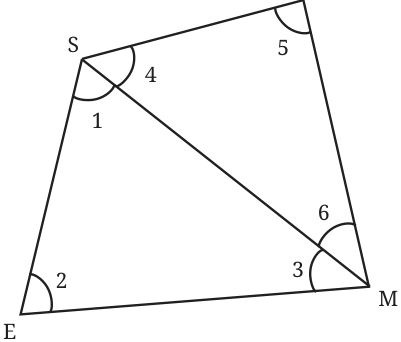

Is it possible to construct a quadrilateral with three angles equal to \(90 ^{\circ}\) and the fourth angle not equal to \(90 ^{\circ}\) ? You might have observed through constructions that this may not be possible.
But why not? This is due to a general property of quadrilaterals related to their angles. We have seen that the sum of the angles of a triangle is \(180 ^{\circ}\) . There is a similar regularity in the sum of the angles of a quadrilateral.
Consider a quadrilateral SOME. Draw a diagonal SM. We get two triangles \(\triangle SEM\) and \(\triangle SOM\). In \(\triangle SEM\), we have \(\angle 1 + \angle 2 + \angle 3 = 180 ^{\circ}\) . And in \(\triangle SOM\), \(\angle 4 + \angle 5 + \angle 6 = 180 ^{\circ}\) . What do we get when we add all six angles? We will have

\(\angle 1+ \angle 2 + \angle 3 + \angle 4 + \angle 5 + \angle 6 = 180 ^{\circ} + 180 ^{\circ} = 360 ^{\circ}\) . Or, ( \(\angle 1+ \angle 4) +\) ( \(\angle 3 + \angle 6) + \angle 2 + \angle 5 = 360 ^{\circ}\) .
Since ( \(\angle 1 + \angle 4)\), ( \(\angle 3 + \angle 6)\), \(\angle 2\) and \(\angle 5\) are the angles of this quadrilateral, we have the following result -
The sum of all angles in any quadrilateral is \(360 ^{\circ}\) .
This explains why it is impossible for a quadrilateral to have three right angles, with the fourth angle not right angle.